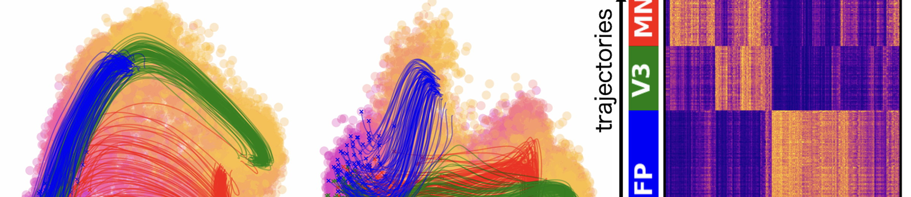
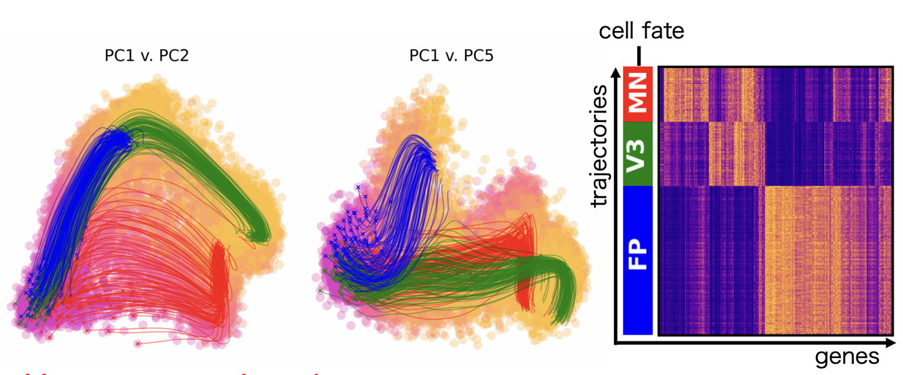
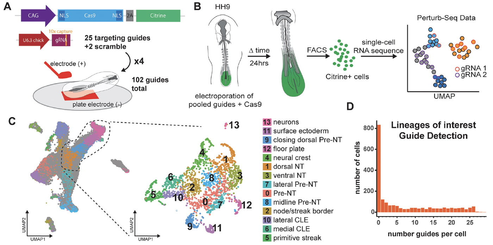

Research
Gene regulatory networks
Groups of transcription factors, wired into a network, decide which type of cell each neural progenitor becomes. We are mapping the network and asking how gradients of signals such as Sonic Hedgehog control it over time.
At the heart of tissue patterning are gene regulatory networks. This is the case in the neural tube, where the expression of groups of transcription factors determines the pattern of cell type generation. Selective repressive and inductive interactions between pairs of transcription factors establish discrete changes in gene expression. This produces a transcriptional code that defines distinct progenitor domains and controls the subtype identity of neurons generated from each domain. Our goal is to identify the components and connections in this network and to understand their function.
We take a systematic approach to identifying the transcription factors that comprise the neural tube network, profiling the transcriptional responses of neural progenitors exposed to different levels and durations of Shh signalling. Many of the players are known, but components and mechanisms remain to be discovered. We use single-cell transcriptome profiling and develop new experimental and computational methods to measure gene expression.

To obtain information about the network and to test function, genetic perturbation is essential. We use and develop methods to disrupt gene expression, including multiplexed in vivo CRISPR screening. Together these analyses let us work out the mechanism and the underlying logic of gene regulation, and we test that understanding by constructing mathematical models of the transcriptional network.

From correlation to causation
Single-cell data now describe gene regulatory networks in great detail, but detail is not explanation. Networks inferred from correlation alone become tangles that cannot say what causes what. We have set out three principles for building models that recover causation: they should be mechanistic by construction, constrained by what cells and evolution can actually do, and trained on perturbation rather than observation alone.
Maizels and Briscoe, Nature Reviews Genetics 2026. Read the review
In many developing tissues, gene regulatory networks are controlled by gradients of extracellular signalling molecules, often termed morphogens, that act as patterning cues. This is the case in the neural tube, where gradients of signals direct the pattern of gene expression. We found that the duration and integration of signals, as well as the level, is important for patterning. This has led to a revision of the morphogen concept in which the dynamics of the morphogen drive patterning.
We hypothesise that the wiring of the intracellular transduction pathway and gene regulatory network generates these dynamics. To investigate this we are developing reagents that provide quantitative, dynamic measures of pathway activity. High resolution, quantitative data on the kinetics of signalling are the starting point for testable dynamical systems models of Shh signal transduction.
Publications
Maizels RJ, Briscoe J
Gene regulatory networks: from correlative models to causal explanations
Nature Reviews Genetics 27:485-498 (2026)
Libby ARG, Rito T, Radley A, Briscoe J
An in vivo CRISPR screen in chick embryos reveals a role for MLLT3 in specification of neural cells from the caudal epiblast
Development 152:dev204591 (2025)
Maizels RJ, Snell DM, Briscoe J
Reconstructing developmental trajectories using latent dynamical systems and time-resolved transcriptomics
Cell Systems 15:411-424 (2024)
Rayon T, Maizels RJ, Barrington C, Briscoe J
Single-cell transcriptome profiling of the human developing spinal cord reveals a conserved genetic programme with human-specific features
Development 148:dev199711 (2021)
Delile J, Rayon T, Melchionda M, Edwards A, Briscoe J, Sagner A
Single cell transcriptomics reveals spatial and temporal dynamics of gene expression in the developing mouse spinal cord
Development 146:dev173807 (2019)
Other research areas

Tempo, growth and lineage
Read more →
Stem cells and bioengineering
Read more →